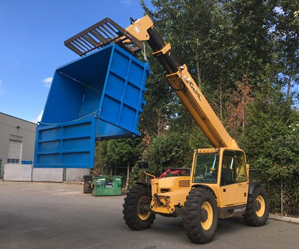
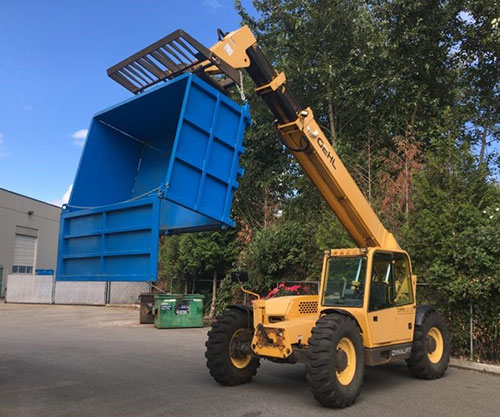

Telehandler Bins
Strong, durable bins for construction sites. Perfect for material handling and debris collection.

 

Product Description
Our Telehandler Bins are strong, durable bins designed for construction sites and material handling applications. These sturdy bins feature removable sides for easy loading and unloading.
Perfect for use with telehandlers, these bins are great for moving materials around construction sites, collecting debris, and transporting bulk materials efficiently.
Key Features:
- Strong, durable construction
- Removable sides for easy access
- Great on construction sites
- Perfect for material handling
- Designed for telehandler use
- Sturdy and reliable
Specifications
Dimensions
- Width: 2.1m
- Depth: 1.5m
- Height: 1.2m
Features
- Removable sides
- Strong, durable construction
- Designed for telehandler use
- Great for construction sites
Pricing (Estimates)
⚠️ All prices are ESTIMATES only and subject to change. Prices converted from AUD to NZD (minimum 15% adjustment for exchange rate and local costs).
Ex Nelson. Price does not include shipping or delivery. Delivery will be arranged with the purchaser and additional charges may apply depending on location.
Please contact us for current pricing and delivery options to your location.
Applications
- Construction sites
- Material handling
- Debris collection
- Bulk material transport
- Waste management
- General site operations